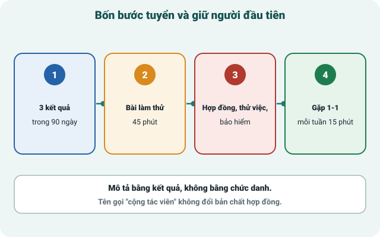

K9 · Lãnh đạo và phát triển người khác › Bậc 3 Vững vàng
Tuyển và giữ những nhân viên đầu tiên
Bài này làm Tờ 6: Phiếu tuyển người đầu tiên và bảng kiểm nhận người. Mẫu in. Cách giao việc và theo dõi có ở bài Giao việc và theo dõi (N5). Bài không tư vấn pháp lý; nguồn luật ghi ở cuối bài.
1. Mục tiêu
- Viết mô tả việc bằng 3 kết quả 90 ngày, kèm một bài làm thử.
- Lập bảng kiểm nhận người: hợp đồng, thử việc, bảo hiểm xã hội, nội quy.
2. Khởi động truy xuất
- Bốn câu hỏi để chọn loại hình kinh doanh là gì?
- Chủ sở hữu hưởng lợi là ai?
Đáp án
- Trách nhiệm; số chủ; gọi vốn; giấy tờ.
- Người thực tế sở hữu hoặc kiểm soát doanh nghiệp.
Xem lại: Pháp lý khởi sự.
3. Giải thích
Người đầu tiên bạn tuyển sẽ định hình cách làm việc của cả doanh nghiệp sau này. Tuyển sai thì tốn tiền và tốn thời gian của founder.
Bước 1. Mô tả việc bằng kết quả. Đừng chỉ viết "nhân viên bán hàng". Viết 3 kết quả người đó phải đạt trong 90 ngày. Ví dụ: "trả lời mọi tin nhắn khách trong 30 phút, giờ hành chính".
Bước 2. Thử bằng bài làm thật, ngắn. Một bài 30–60 phút giống việc thật nói lên nhiều hơn câu "Bạn có điểm mạnh gì?". Hỏi thêm về việc họ đã làm, như cách phỏng vấn khách ở Bài 1.
Bước 3. Làm đúng giấy tờ.
Bảng kiểm khi nhận người
- Hợp đồng bằng văn bảnHợp đồng dưới 1 tháng mới có thể bằng lời nói, trừ một số trường hợp.
- Tên gọi không quyết địnhCó việc, có lương, có quản lý thì là hợp đồng lao động.
- Thử việcCó giới hạn ngày tối đa; lương ít nhất 85% lương của công việc.
- Bảo hiểm xã hộiHợp đồng từ đủ 1 tháng thuộc diện bắt buộc.
- Nội quyTừ 10 người lao động: nội quy bằng văn bản và đăng ký.
Gọi là "cộng tác viên" không làm thay đổi bản chất. Nếu có việc làm, có trả lương và có sự quản lý, đó là hợp đồng lao động.
Bước 4. Giữ người. Ở doanh nghiệp nhỏ, người giỏi thường nghỉ vì không biết mình đang làm tốt hay kém. Ba việc đơn giản:
- Gặp 1-1 mỗi tuần 15 phút trong 3 tháng đầu. Hỏi: tuần này vướng gì, cần gì từ tôi.
- Trả lương đúng hạn, kể cả khi dòng tiền khó. Xem lại Tờ 4 để chuẩn bị trước.
- Nói rõ đường phát triển: sau 6–12 tháng, họ có thể đảm nhận thêm việc gì.

4. Ví dụ tại nơi làm việc Việt Nam
Tình huống giả định. Anh Quang có xưởng in áo thun đồng phục ở Hải Phòng. Anh làm một mình, đơn bắt đầu dồn.
Anh viết 3 kết quả 90 ngày cho người đầu tiên. Một: báo giá cho khách trong ngày. Hai: chốt mẫu thiết kế với khách trước khi in. Ba: không đơn nào giao trễ vì thiếu thông tin.
Bài làm thử: đọc một tin nhắn khách hỏi giá 50 áo, viết câu trả lời và danh sách điều cần hỏi thêm. Ứng viên Hương viết thiếu ít nhưng hỏi đúng cỡ áo và hạn giao. Anh chọn Hương.
Anh ký hợp đồng lao động bằng văn bản, thỏa thuận thử việc 30 ngày, lương thử việc bằng 100%. Hợp đồng chính thức 12 tháng, anh đăng ký bảo hiểm xã hội cho Hương.
Mỗi sáng thứ Hai, hai người gặp 15 phút. Tuần thứ ba, Hương nói khách hay hỏi lại giá. Anh làm bảng giá chuẩn. Số tin hỏi lại giảm rõ.
Vì sao cách này tốt: tuyển theo việc thật, không theo cảm giác. Giấy tờ đúng từ đầu. Buổi 1-1 phát hiện một vấn đề mà anh không thấy.
5. Thực hành
Tình huống giả định. Chị Uyên mở quán cà phê nhỏ ở Huế, cần tuyển một nhân viên pha chế làm toàn thời gian.
Viết 3 kết quả 90 ngày và một bài làm thử. Điền bảng kiểm nhận người.
Gợi ý 1
Kết quả của pha chế có thể đo bằng thời gian ra món, độ đều của vị, và việc giữ quầy sạch.
Gợi ý 2
Toàn thời gian, hợp đồng nhiều tháng: nghĩ đến hợp đồng văn bản và bảo hiểm xã hội bắt buộc.
Lời giải mẫu
3 kết quả 90 ngày
- Ra món trong 5 phút vào giờ cao điểm.
- Pha đúng công thức 10 món chính, khách không phản ánh về vị.
- Quầy sạch theo bảng kiểm cuối ca, mỗi ngày.
Bài làm thử: pha 3 món theo công thức của quán trong 20 phút, rồi kể một lần từng xử lý khách khó.
Bảng kiểm: hợp đồng lao động bằng văn bản; thử việc trong giới hạn luật cho phép, lương thử việc ít nhất 85%; đăng ký bảo hiểm xã hội bắt buộc; quán dưới 10 người nên chưa bắt buộc nội quy bằng văn bản, nhưng vẫn nên viết quy tắc ca làm.
(Thông tin là giả định.)
6. Tự kiểm tra
Chọn đáp án. Mỗi lựa chọn đều có giải thích.
Câu 1. Dòng nào là kết quả 90 ngày viết tốt cho người bán hàng đầu tiên?
-
Chưa đúng. Đây là mô tả tính cách, không đo được.
-
Đúng. Đúng. Có việc cụ thể và có thể đo được.
-
Chưa đúng. Đây là chức danh, chưa nói làm tốt là thế nào.
Câu 2. Một người làm 8 giờ mỗi ngày theo ca, do bạn quản lý. Bạn gọi họ là "cộng tác viên" và không ký gì. Điều nào đúng?
-
Chưa đúng. Tên gọi không quyết định bản chất. Có việc, có lương, có quản lý thì là hợp đồng lao động.
-
Đúng. Đúng. Theo khoản 1 Điều 13 Bộ luật Lao động, cần xem nội dung chứ không xem tên gọi.
-
Chưa đúng. Trả tiền đủ chưa thay được hợp đồng, bảo hiểm và các nghĩa vụ khác.
Câu 3. Nhân viên ký hợp đồng lao động 12 tháng. Về bảo hiểm xã hội, điều nào đúng?
-
Chưa đúng. Quy mô doanh nghiệp không làm mất nghĩa vụ này.
-
Đúng. Đúng. Hợp đồng từ đủ 1 tháng thuộc diện bắt buộc theo Luật Bảo hiểm xã hội 41/2024/QH15.
-
Chưa đúng. Không có mốc 6 tháng như vậy. Hãy đọc văn bản gốc về thời điểm đóng.
Câu 4. Nhân viên đầu tiên làm được 2 tháng, ít nói. Bạn không biết họ có hài lòng không. Việc nào nên làm trước?
-
Chưa đúng. Chưa biết vấn đề là gì. Tăng lương có thể không giải quyết đúng chỗ.
-
Đúng. Đúng. Buổi 1-1 đều đặn giúp phát hiện vấn đề sớm.
-
Chưa đúng. Nhiều người không tự nói. Họ nghỉ việc trước khi kịp nói.
7. Phản tư
- Người đầu tiên bạn muốn tuyển sẽ đạt kết quả gì mà bạn không tự làm được?
- Bạn đã từng tuyển người vì "thấy hợp" chưa? Kết quả ra sao?
8. Áp dụng thật
Trong 7 ngày tới, điền Tờ 6 cho vị trí bạn sắp tuyển. Nếu đã có nhân viên, kiểm lại hợp đồng và bảo hiểm của từng người theo bảng kiểm.
Cập nhật lần cuối: 14/11/2026. Nguồn (tra cứu ngày 14/11/2026): Bộ luật Lao động số 45/2019/QH14, theo văn bản hợp nhất 18/VBHN-VPQH ngày 12/02/2026. Điều 13 khoản 1 (hợp đồng có tên gọi khác vẫn là hợp đồng lao động nếu đủ các yếu tố); Điều 14 (hình thức hợp đồng); Điều 25–26 (thời gian và tiền lương thử việc); Điều 118–119 (nội quy lao động). Luật sửa đổi Bộ luật Lao động đang được Quốc hội khóa XVI thảo luận (phiên ngày 09/11/2026). Tại ngày tra, luật chưa được thông qua. Luật Bảo hiểm xã hội số 41/2024/QH15, ban hành 29/6/2024, hiệu lực từ 01/7/2025. Điểm a khoản 1 Điều 2: người làm việc theo hợp đồng lao động từ đủ 01 tháng thuộc diện bắt buộc. Dự thảo luật sửa đổi Luật Bảo hiểm xã hội cũng đang được thảo luận. Bài chỉ tóm tắt ý chính. Khi áp dụng, đọc văn bản hợp nhất mới nhất và hỏi chuyên gia.
9. Siêu dữ liệu
| skill | K9 · Lãnh đạo và phát triển người khác |
|---|---|
| level | Bậc 3 · Vững vàng |
| group | N7 |
| framework_map | EntreComp: Mobilising others; Working with others; WEF: Talent management; Leadership and social influence; SkillsFuture CCS: Developing People; NACE: Leadership; CSfW: 1b Work with roles, rights and protocols (chỉ dẫn chiếu) |
| updated | 2026-11-14 |
Hoàn thành bài
Đánh dấu đã học để site gợi ý lịch ôn sau 1, 3 và 7 ngày. Dữ liệu chỉ lưu trên máy của bạn.
Lịch ôn gợi ý: